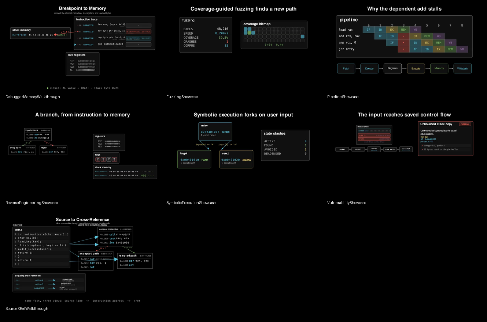

0x4010000x401000testeax, eax0x401002jne0x401019Alpha release candidate · v0.1.0
Manim Community Edition plugin
Build clear, deterministic animations for control flow, debugger traces, memory, CPU internals, fuzzing, symbolic execution, and vulnerability research—without rebuilding every visual from scratch.
Presentation toolkit, not a binary-analysis engine. You supply the evidence; Manim Rev makes it legible.
fallthrough taken branch
One story, many views
A talk loses its audience when every cut introduces a new visual language. Manim Rev gives source, instructions, traces, and bytes a shared semantic vocabulary so the same address can carry the narrative across the screen.
parser.c:1180x0040712aRIP → 0x0040712a[rsp+0x18] = 0x41Composable toolkit
Each component is a regular Manim mobject with deliberate animation helpers and semantic lookups.
Basic blocks, typed edges, traversals, loops, calls, and manually positioned dense graphs.
Instruction traces, breakpoints, pre/post state, repeated addresses, registers, and flags.
Addressable hex dumps, exact byte ranges, reads and writes, memory maps, and permissions.
Instruction encodings, data paths, pipeline stages, stalls, forwarding, and squashes.
Coverage growth, corpus evolution, crash discovery, reproduction, and deduplication.
Forking state trees, path constraints, solver outcomes, and angr-style state stashes.
Stack overwrites, taint paths, sinks, finding cards, and evidence-driven triage.
Source listings, lowered instructions, incoming and outgoing references, and linked views.
Watch the components work
These are low-resolution documentation renders. Every demo is backed by source you can copy, adapt, and render at presentation quality.
CFG, instructions, registers, flags, and a stack-memory write in one scene.
Follow a recorded store from the trace instruction to the byte it changes.
Show the flush boundary and stop wrong-path instructions at the right cycle.
Turn new edges and corpus growth into a readable testing narrative.
Emphasize diverging states, their constraints, and solver outcomes.
Carry attacker-controlled bytes to the saved return address without losing context.
Start from source today
Manim Rev requires Python >=3.11 and Manim Community Edition 0.20.x; CI targets Python 3.11–3.14. Until the first PyPI release is published, install directly from the public repository. Native Cairo and Pango prerequisites still follow Manim’s platform installation guide.
Version 0.1.0 is an alpha release candidate. The examples and package are tested, but the public API may change between minor releases.
python -m pip install git+https://github.com/SauceTaster/manim-rev.gitfrom manim import Create, Scene
from manim_rev import (
BasicBlockSpec, CFGEdgeSpec,
ControlFlowGraph, EdgeKind, InstructionSpec,
)
class BranchScene(Scene):
def construct(self):
blocks = [
BasicBlockSpec(
"check", 0x401000,
[InstructionSpec(0x401000, "test", "eax, eax")],
),
BasicBlockSpec("ok", 0x401002, ["call handle_ok"]),
BasicBlockSpec("fail", 0x401009, ["call reject"]),
]
edges = [
CFGEdgeSpec("check", "ok", EdgeKind.FALSE, "ZF = 0"),
CFGEdgeSpec("check", "fail", EdgeKind.TRUE, "ZF = 1"),
]
cfg = ControlFlowGraph(blocks, edges)
self.play(Create(cfg))
self.play(cfg.traverse(["check", "ok"]))manim branch_scene.py BranchScene -pqhEvidence, not decoration
The release-candidate corpus rendered all 39 scenes with Manim CE 0.20.1. Early, middle, and final frames were inspected for technical intent, readability, clipping, contrast, density, and animation continuity.
About this site: semantic landmarks, visible keyboard focus, descriptive image text, native video controls, and system reduced-motion and increased-contrast preferences are supported. The sample videos contain no audio; their adjacent descriptions state the intended takeaway.
Read the visual QA record
Open the reviewed gallery →Open source · MIT
Borrow a scene, compose a new one, or help shape the API before it stabilizes.